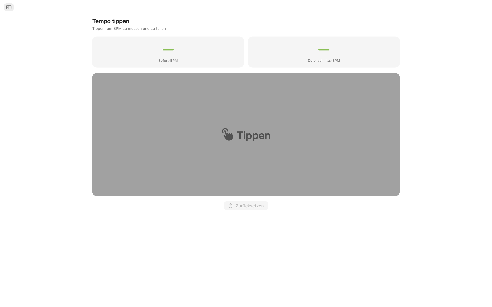
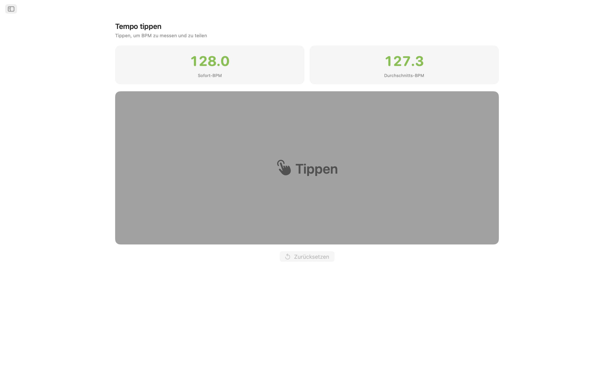
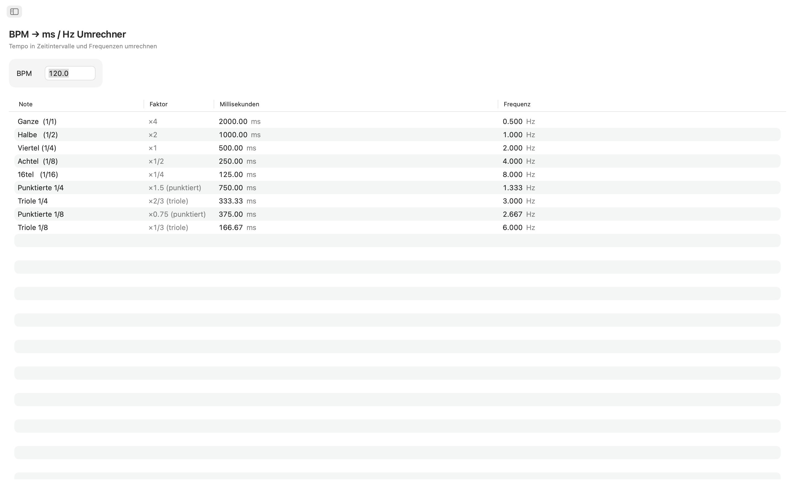
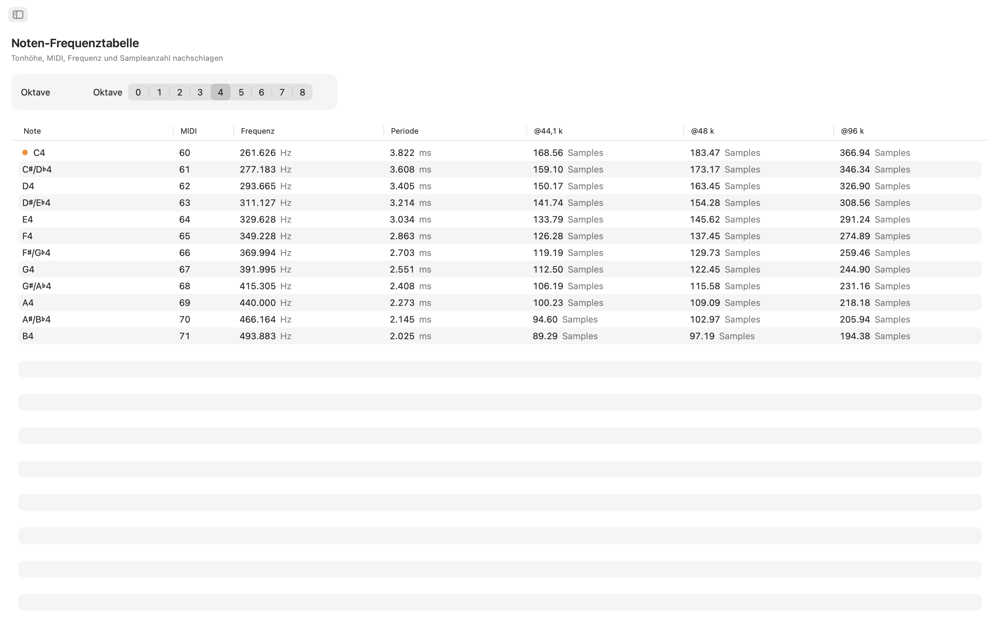
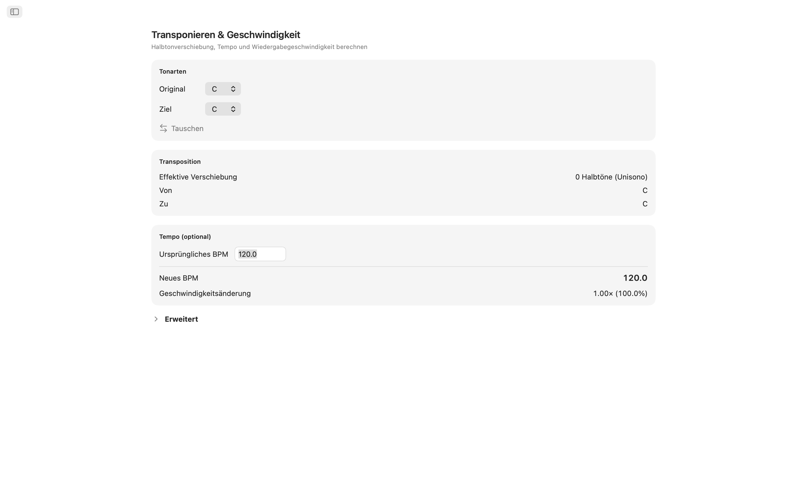
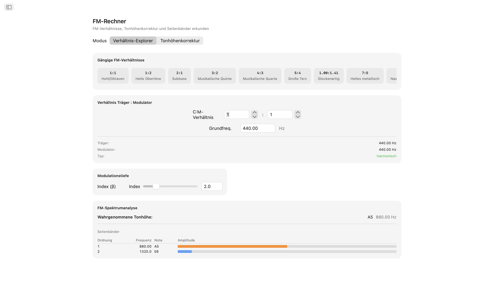
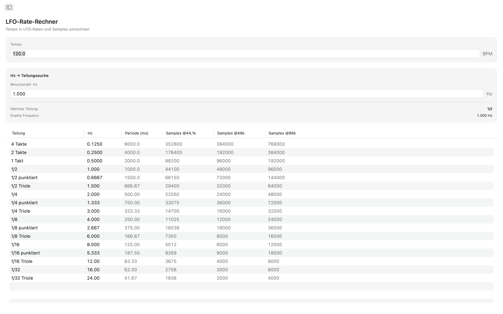
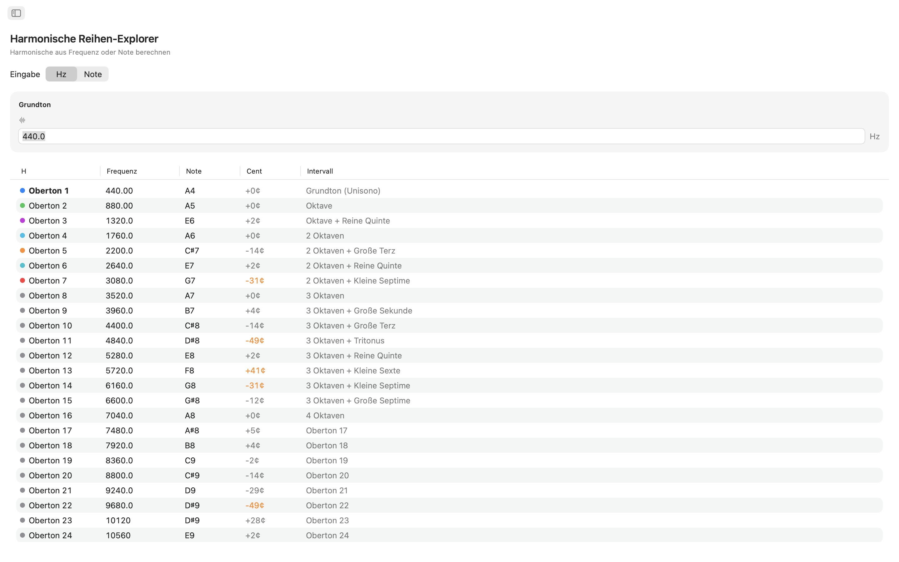
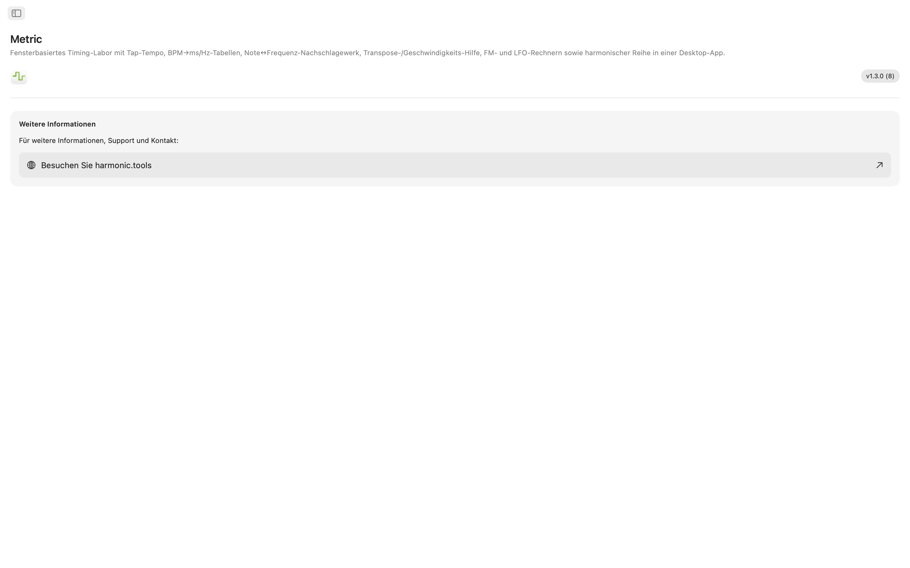

Metric für macOS
Timing- und Frequenz-Toolkit für macOS. Ob Sie Delay-Zeiten in einem Mix einstellen, einen FM-Patch stimmen, einen LFO synchronisieren oder ein Sample transponieren — Metric liefert sofortige, präzise Antworten — alles in einer App mit Seitenleisten-Navigation, die neben Ihrer DAW Platz findet.
- Tap-Tempo mit geteiltem BPM über alle Werkzeuge
- BPM → ms / Hz Umrechner (normal, punktiert, triolisch)
- Note ↔ Frequenz-Tabelle (108 Töne, einstellbare Stimmung)
- Transposition und Geschwindigkeit, FM-Rechner, LFO-Rate, 32 Obertöne
Screenshots
Enthält Screenshots im hellen und dunklen Modus, die dem Design der Website folgen.










Funktionen
- Tap-Tempo: Klicken Sie auf das große Tap-Ziel, um das Tempo zu messen. Sehen Sie das sofortige BPM Ihres letzten Taps und einen gleitenden Durchschnitt über bis zu acht Taps. Senden Sie eine der beiden Messungen direkt an den BPM-Umrechner, Transposition oder LFO-Raten mit einem Klick. Ihr Tempo fließt automatisch zwischen allen Werkzeugen.
- BPM → ms / Hz Umrechner: Geben Sie ein Tempo ein und lesen Sie normale, punktierte und triolische Werte für ganze Noten, halbe Noten, Viertelnoten, Achtelnoten und Sechzehntelnoten ab. Jede Zeile zeigt Millisekunden und Hz, sodass Sie Delay, Reverb-Predelay oder Sidechain-Timing ohne Taschenrechner einstellen können.
- Notenfrequenz-Tabelle: Durchsuchen Sie alle 108 chromatischen Noten von C0 bis B8. Jede Note zeigt ihre MIDI-Nummer, Frequenz in Hz, Periode in Millisekunden und Sampleanzahl bei 44,1 kHz und 48 kHz. Das mittlere C ist zur schnellen Orientierung markiert. Die einstellbare A4-Stimmung (Standard: 440 Hz) berechnet jeden Wert sofort neu.
- Transposition und Geschwindigkeit: Wählen Sie eine Ausgangs- und Zieltonart, um die Halbtonverschiebung, den Intervallnamen und den exakten DAW-Transpositionswert zu sehen. Fügen Sie ein Ausgangs-BPM hinzu und Metric berechnet das neue Tempo und das Wiedergabegeschwindigkeitsverhältnis. Verfeinern Sie mit einem Cent-Regler (±100) und einem Geschwindigkeitsregler über zwei volle Oktaven (±24 Halbtöne).
- FM-Rechner: Der Ratio-Explorer lässt Sie Carrier- und Modulator-Verhältnisse mit einer Grundfrequenz festlegen und aus zehn klassischen FM-Presets wählen, von hohlen Oktaven (1:1) bis zu inharmonischen Glocken (1:π). Der Tonhöhenkorrektur-Modus arbeitet umgekehrt: Wählen Sie eine Zielnote und erhalten Sie die exakten Carrier- und Modulator-Frequenzen. Beide Modi zeigen eine Seitenband-Tabelle mit bis zu zehn Partialtönen, deren Frequenzen, nächsten Noten und farbcodierten Amplituden, gesteuert durch einen Modulationsindex-Regler.
- LFO-Rate-Rechner: Rechnen Sie jedes BPM in LFO-Raten über 17 musikalische Unterteilungen um, von vier Takten bis 1/32-Triolen. Jede Zeile zeigt Hz, Periode in Millisekunden und Samples pro Zyklus bei 44,1 kHz und 48 kHz. Die Rückwärtssuche ermöglicht die Eingabe eines beliebigen Hz-Werts, um die nächste musikalische Unterteilung mit klar angezeigter Abweichung zu finden.
- Obertonreihen-Explorer: Starten Sie mit einer Frequenz oder wählen Sie eine beliebige Note und sehen Sie die ersten 32 Obertöne mit Frequenz, nächstem Notennamen, Cent-Abweichung und Intervallbezeichnung. Niedrige Obertöne sind für einfache Identifizierung farbcodiert. Abweichungen über 30 Cent werden hervorgehoben, um inharmonischen Inhalt auf einen Blick zu erkennen.
Werkzeuge, die miteinander kommunizieren
Tippen Sie ein Tempo einmal und es erscheint überall: BPM-Umrechner, Transposition und LFO-Raten teilen alle dasselbe BPM in Echtzeit. Ändern Sie Ihre A4-Stimmungsreferenz und sie aktualisiert sich gleichzeitig in Notenfrequenz, FM-Rechner und Obertönen.
Für Ihren Desktop entwickelt
- Funktioniert komplett offline — kein Konto, keine Werbung, kein Tracking
- Native macOS-App mit Seitenleisten-Navigation
- Dark-Mode-kompatible Oberfläche, die Ihrem Systemdesign folgt
- Zwei Standard-Abtastraten: 44,1 kHz und 48 kHz
- Einstellbare A4-Referenzstimmung
- Größenveränderliches Fenster — lassen Sie es neben Ihrer DAW offen
Ob Sie ein Produzent sind, der Delays programmiert, ein Sounddesigner, der FM-Klangfarben formt, ein Keyboarder, der Oszillatoren stimmt, oder ein Tontechniker, der Frequenzen überprüft — Metric bringt jede Timing- und Frequenzantwort auf Ihren Desktop.